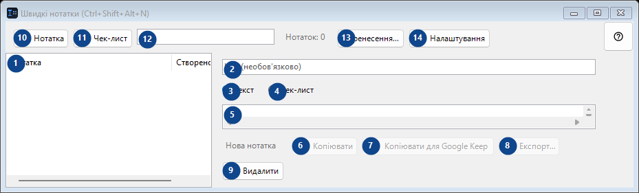
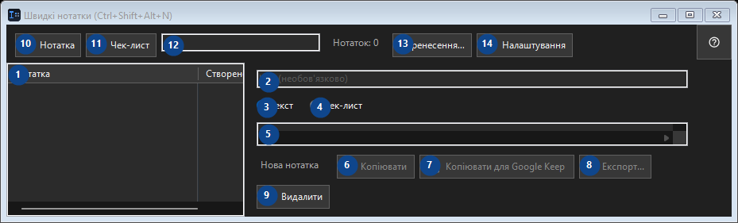

Швидкі нотатки (Ctrl+Shift+Alt+N)
Для чого це вікно
Маленький локальний блокнот: за хоткеєм відкрити, кинути фрагмент коду чи думку, закрити.


Порядок дій
Прочитайте пояснення до номерів, виберіть потрібні значення та продовжте командою вікна.
Елементи
1. Елементи
Тут показано поточний вміст або стан. Виберіть запис для роботи з ним. Нотатка / Створено
Ваші сполучення клавіш2. Виберіть або введіть значення для сусіднього підпису. Перевірте його перед продовженням.
Виберіть або введіть значення для сусіднього підпису. Перевірте його перед продовженням.
Ваші сполучення клавіш3. Текст
Скористайтеся командою, коли потрібна вказана дія. Прочитайте запит підтвердження перед згодою.
Ваші сполучення клавіш4. Чек-лист
Скористайтеся командою, коли потрібна вказана дія. Прочитайте запит підтвердження перед згодою.
Ваші сполучення клавіш5. Виберіть або введіть значення для сусіднього підпису. Перевірте його перед продовженням.
Виберіть або введіть значення для сусіднього підпису. Перевірте його перед продовженням.
Ваші сполучення клавіш6. Копіювати
Скористайтеся командою, коли потрібна вказана дія. Прочитайте запит підтвердження перед згодою. Елемент зараз недоступний. Спочатку ввімкніть функцію або виберіть запис.
Ваші сполучення клавіш7. Копіювати для Google Keep
Скористайтеся командою, коли потрібна вказана дія. Прочитайте запит підтвердження перед згодою. Елемент зараз недоступний. Спочатку ввімкніть функцію або виберіть запис.
Ваші сполучення клавіш8. Експорт...
Скористайтеся командою, коли потрібна вказана дія. Прочитайте запит підтвердження перед згодою. Елемент зараз недоступний. Спочатку ввімкніть функцію або виберіть запис.
Ваші сполучення клавіш9. Видалити
Скористайтеся командою, коли потрібна вказана дія. Прочитайте запит підтвердження перед згодою.
Ваші сполучення клавіш10. Нотатка
Скористайтеся командою, коли потрібна вказана дія. Прочитайте запит підтвердження перед згодою.
Ваші сполучення клавіш11. Чек-лист
Скористайтеся командою, коли потрібна вказана дія. Прочитайте запит підтвердження перед згодою.
Ваші сполучення клавіш12. Нотаток: 0
Виберіть або введіть значення для сусіднього підпису. Перевірте його перед продовженням.
Ваші сполучення клавіш13. Перенесення...
Скористайтеся командою, коли потрібна вказана дія. Прочитайте запит підтвердження перед згодою.
Ваші сполучення клавіш14. Налаштування
Скористайтеся командою, коли потрібна вказана дія. Прочитайте запит підтвердження перед згодою.
Ваші сполучення клавіш